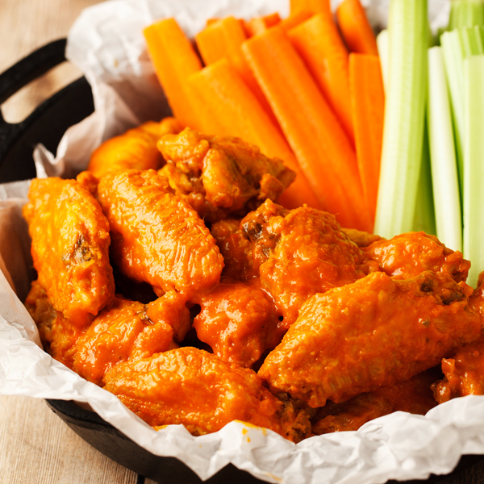

Baked Buffalo Wings

Description
These baked Buffalo wings are crispy without being fried.
They take only 10 minutes to prep, but need to be refrigerated
for about an hour so the flour coating is firm. You can add more
cayenne or hot sauce if you like them spicier!
Ingredients
- cooking spray
- ¾ cup all-purpose flour
- ½ teaspoon cayenne pepper
- ½ teaspoon garlic powder
- ½ teaspoon salt
- 20 chicken wings
- ½ cup melted butter
- ½ cup hot pepper sauce (such as Frank's RedHot®)
Steps
- Line a baking sheet with aluminum foil, and lightly grease with cooking spray.
- Place flour, cayenne pepper, garlic powder, and salt into a resealable plastic bag,
and shake to mix. Add chicken wings, seal the bag, and toss until well coated with the
flour mixture.
- Transfer wings to the prepared baking sheet and refrigerate for at least 1 hour.
- Preheat the oven to 400 degrees F (200 degrees C).
- While the oven is preheating, whisk together melted butter and hot sauce in a small bowl.
- Dip wings into butter mixture, and place back on the baking sheet.
- Bake in the preheated oven for 20 minutes. Flip wings and continue to cook until crispy on
the outside and no longer pink in the center, about 25 more minutes.